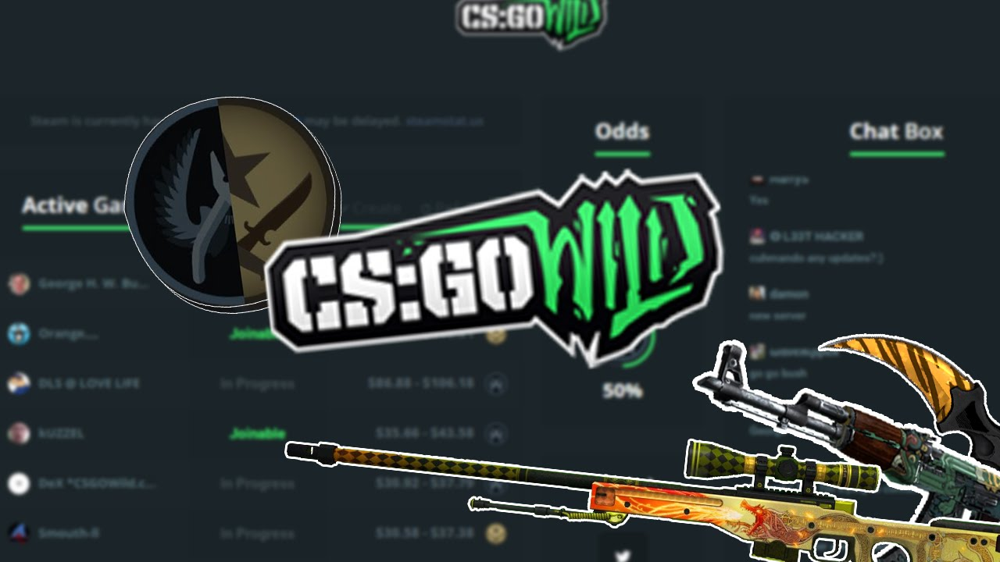

In de afgelopen 24 uur zijn er berichten rond gegaan in het Counter-Strike wereldje dat een nieuwe "ban wave" de valsspelers hard aanpakt. Data-mining website "SteamDB" zet het aantal op 11.445 bans alleen vandaag al die gevonden zijn door de VAC (Valve anti-cheat) systeem. Dat is de grootste ban wave in meer dan een jaar. Lees verder...
Today, Virtus.pro swept a two game series against Cloud9 to win the Counter-Strike: Global Offensive finals at the DreamHack Open in Bucharest. The all-Polish team appeared all but unstoppable, defeating the Americans 16-9 on both the first map, Train, and the second, Cobblestone. Lees verder...
In Kiev, Ninjas in Pyjamas are victorious after beating G2 Gaming in a swift, 2-0 series. The Swedes went 16-7 on the first map, Cache, followed by a much closer, 22-18 nail-biter on Overpass which found the Frenchmen unable to stop the bleeding. Lees verder...
One of 2016’s most explosive pieces of gaming journalism was broken by a news-obsessed Indian IT guy with a relatively unknown YouTube channel. HonorTheCall, an anonymous internet presence, is a full-time software developer whose YouTube image, up until June, was built on small-fry Call of Duty news. Over Call of Duty footage, HonorTheCall pronounced updates and opportunities exclusive to the COD community, facelessly and with a strong accent. Lees verder...